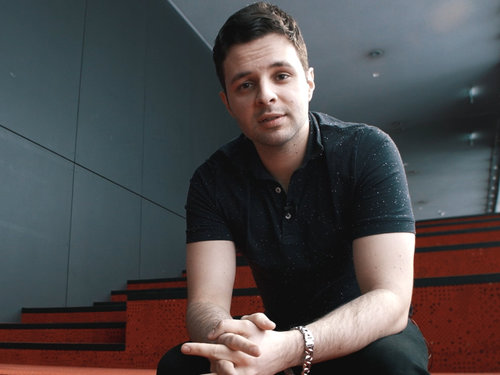
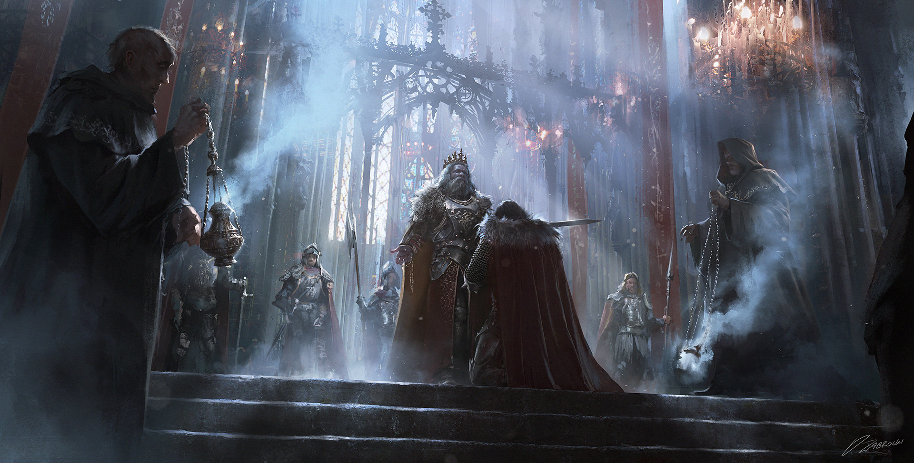
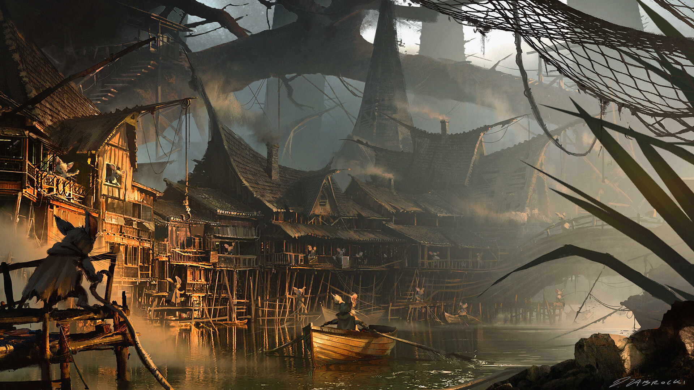
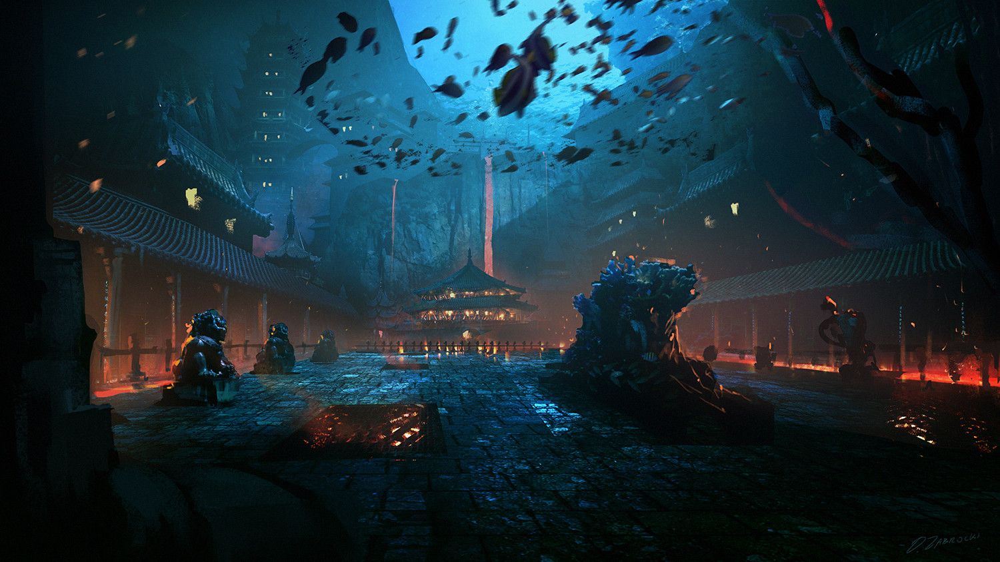
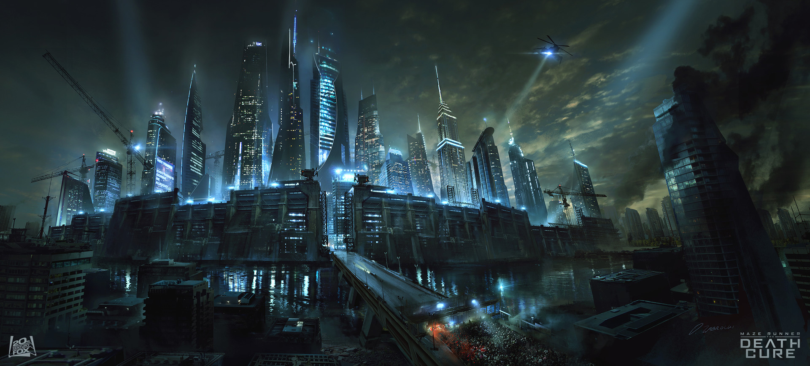
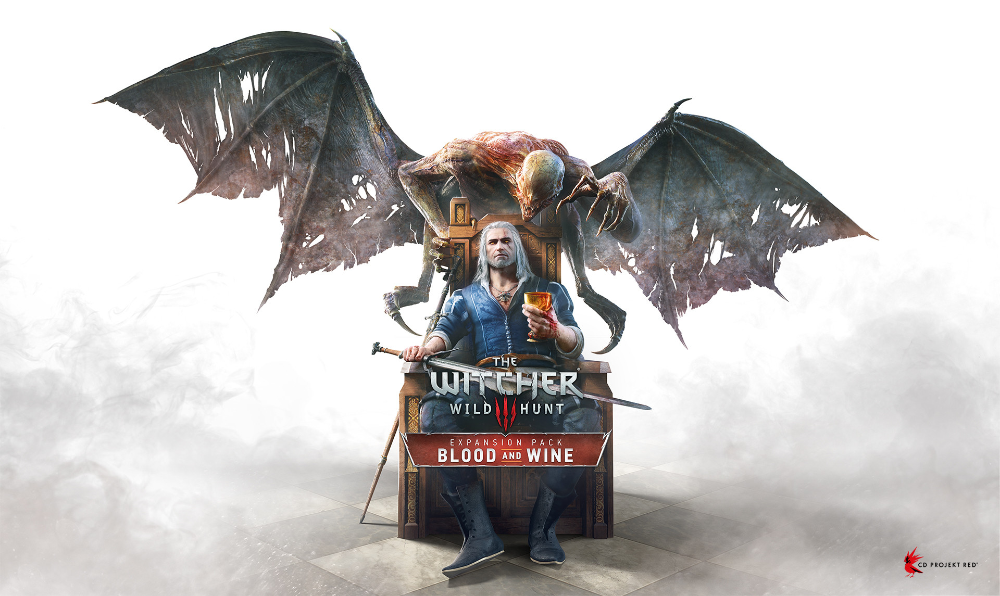
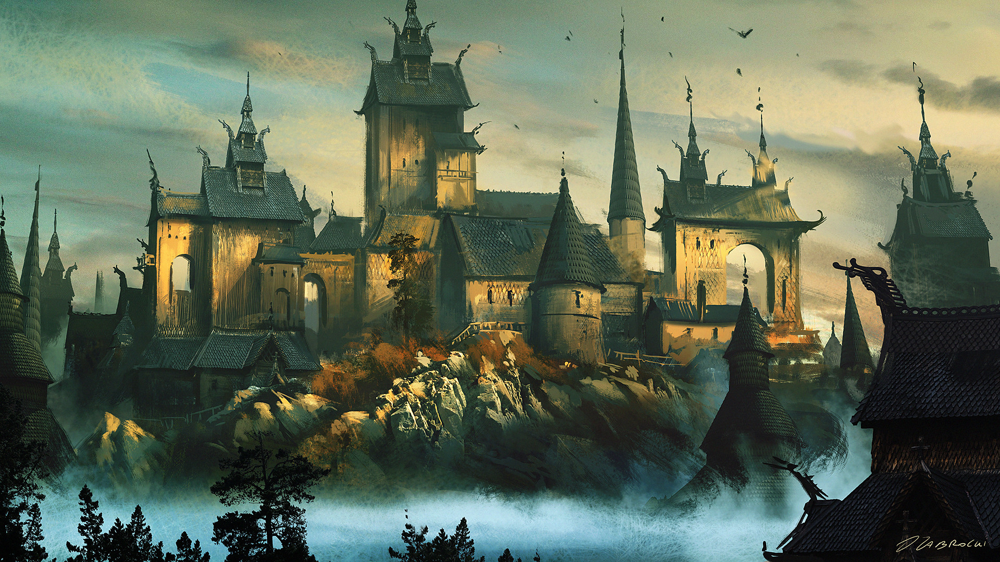

DAREK ZABROCKI
EDUKATOR | KONCEPT ARTYRSTA | ILUSTRATOR
Koncept artysta i ilustrator z Gdańska. Zaczął rysować w wieku 3 lat
i to zawsze było jego największą pasją. Rozwijał umiejętności,
ucząc się nowych narzędzi i próbując różnych sposobów podejścia do
ilustracji i projektowania. Jego wyjątkowa wszechstronność zaowocowała
szeroką gamą prac, a jego motywacja i wytrzymałość świadczy o
szerokim zakresie prac wykonywanych na najwyższym światowym poziomie.
Rysunek daje mu energię w życiu, do tego stopnia, że jest kluczowym
aspektem tego, kim jest. Dzień bez malowania to dzień stracony.
W 2007 roku poczuł, że nadszedł czas na zmianę w jego życiu artystycznym.
Przeniósł się z mediów tradycyjnych do cyfrowych, co pozwoliło mu w
rozwinięciu jego kariery artystycznej.
Po kilku latach odkrywania technik cyfrowych i ciężkiej pracy rozpoczął
współpracę z wiodącymi firmami branży rozrywkowej, oferując projekty zarówno do filmów, jak i gier.